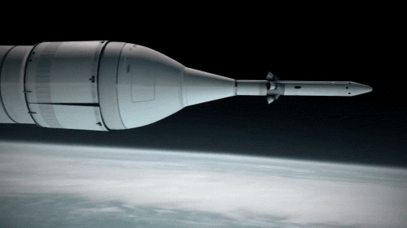
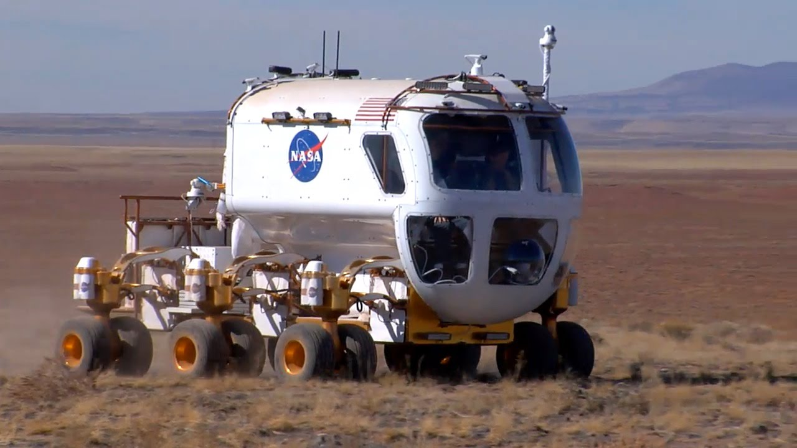
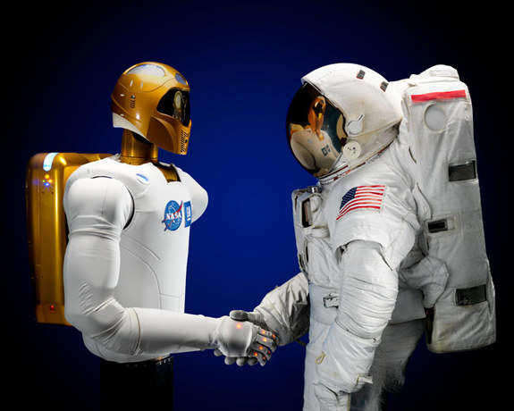

America's New Heavy-Lift Launch Vehicle
NASA's new Space Launch System(SLS) is going to be the largest rocket ever built. The rocket will cary the capsule Orion to space and it'll take it past low Earth orbit! This spacecraft will rewrite the story of space exploration.

Mars is also known as the Red Planet. It is our next door neighbor and our next destination for human exploration. We can learn a lot from Mars, if it had water, and if it supported alien life forms. It is 142 miles away from the Sun and orbits it at about 14.5 miles per second. It is 4,200 miles in diameter and its tilt of axis is 25 degrees. It takes 687 Earth days to comlete on orbit around the Sun. It has 24 hours and 37 minutes in a day. Its average temperature is about -81 degrees F. Its atmosphere contains mostly carbon dioxide, some water vapor. Finally it has two moons. Earth's atmosphere is about 100 times denser than Mars's atmosphere. A person that weighs 100 pounds on Earth will weigh 38 pounds on Mars.
Nasa has finally created a second crew capsule, the Orion Spacecraft, that will take astronauts to different objects in space like Mars! The Orion spacecraft is still under testing but some of it is already ready. The Orion is going to be an amazing spacecraft that would have the newest technologies on board! This is one of the smartest pieces of engineering ever built.
Orion's heat shield is the largest heat shield ever made! Orion's heat shield has to be strong enough to overcome the extreme temperatures during re-entery. The heat will be twice the temperature of molten lava! the heat shield I 16 1/2 feet in diameter. It wheighs about 1000 pounds and Orion's wheight is about 20000 pounds, so the heat shield is about 1/20 the mass of the spacecraft. The heat shield of orion is made to withstand temperatures that are 6000 degrees F. This heat shield will be the armor for the four lives in the spacecraft.
Orion's Crew Capsule is like the Apollo capsule but the comparison ends there. Some people refer to Orion as Apollo on steriods. The capsule can withstand the vaccume of space and it can keep salt water out of the capsule which saves the spacecraft from potential damage. The capsule hold a habitat for the crew and can be stored with water and electronics.
The crew module is the green interior vessel that makes up the core of the capsule. The Avionics of spacecraft are described as the brains of the spacecraft. Its comunication will be in the form of the greatest technology. It will have comunications that would be 1000 times beter than the systems in the International Space Station and the Space Shuttle. The capsule contains a part called the glass cockpit which is a digital control system based on several airplane cockpits including Boing 787 multifunction flat-panel multi-color displays.
The service module is the propulsion of the spacecraft. It carries rocket engines for propulsion and solar panels to generate energy. It carries water, oxygen, nitrogen that are needed for life support. It also maintains the temperature and is made of the Alluminum lithium alloy which was used in the Space Shuttle's exterior tank. Fourteen foot fairing panels cover those components during launch. The solar arrays are rigid and are micro-thin. Each panel can generate about 6000 watts of power, enough to power to power six houses!
In case of an emergency during launch, the spacecrafts launch abort system will detatch the spacecraft which will save the crew from serious ijuries. The launch abort system is on top of the system and does its job in milliseconds.
Orion is going to be able to land four astronauts on the moon, orbit the moon, orbit the Earth, dock on to the International Space Station, asteroids, moons of Mars, and eventually Mars itself. Orion can be docked at the International Space Station for up to six months. Soon, an unmanned Orion might circle the moon by 2017 and the first manned mission would take place in 2021. Landing on an asteroid would take place in the late 2020s and a landing in Mars would take place in the 2030s. If we can't reach near Earth objects, there will be now way we will reach Mars.

The SLS camera showed the Earth during its first flight test
For years the Space Shuttle had taken us to low Earth Orbit*. Then the Saturn V took astronauts to the moon. The Space Shuttle and the Saturn V needed lots of fuel to take humans up to space. The Shuttle's fuel would weigh more the the Shuttle, its external tank, and its rocket boosters combined! The Saturn V weight about 6,500,000 pounds and could carry five times what the Shuttle could carry, but in order for it to maintain the wheight, the Saturn V had to carry 6,000,000 pounds of fuel, so the Saturn V was a rocket with 90% fuel! Now, luckly we have the SLS. Its second version would use the same amount of fuel as the Saturn V, but instead of taking us to the Moon, it will take us to Mars!
The SLS is going to be the world's largest rocket ever built. There are two versions of the SLS. The first version will take us to the moon but the second version will be the tallest rocket in history, it will have the greatest thrust, and it will be able to carry the most stuff into orbit. The SLS is going to be the next rocket that will send humans to a different objects in space.
The core stage stands over 200 feet tall, with a diameter of 27.5 feet! It carries cryogenic liquid hydrogen and liquid oxygen. There are two solid rocket boosters that help the main rocket booster to send the Orion spacecraft into space. NASA's SLS will be the second rocket to transport humans past low Earth orbit. The last time we did that, we took astronauts to the moon using the Saturn V and Apollo Spacecraft. The SLS will be the most powerful rocket built by NASA alone and is going to be a major milestone to in space exploration!

The Manned Mars Rover is similar to the Moon buggy used in the Apollo Missions except, the Crew will be protected by a pressurised cacoon. This alows the astronauts to drive in their shirt sleeves and go on longer drives. The wheels will be able to rotate continuously. Another new ability is the rover can go in any direction. It can go sideways which can make docking much easier. The most interesting part of this rover is at its rear. This an entirely new concept, a suit port. This allows astronauts to come into suits much faster and easier than spending lots of time getting ready. This rover will help the astronauts greatly.
Many current Mars mission have been expanding our knowledge on Mars so that we will have enough information to send explorers to Mars.
Curiosity has been paving our path in mars exploration. It has been conducting experiments and anylising data about mars's surface. curiosity is going to help us with understanding mars's geographic structure.
Oppurturnity is going to add on to what Curiosity is going to find. It will also study the composition of Mars's surface.
Maven, unlike the other two missions, is orbiting mars and recording its tempuratures and disasters.
Insight is going to be a future mission for this year. it will dig into the surface of mars and experiment with the substances found just to make sure that humans are safe while exploring mars.
International Space Station (ISS) is conducting counless experiments to help future mars exploration. the one-year mission crew, Scott Kelly and Mikhail Kornienko are conducting experiments to see how the body changes of a long period of time in space so that the explorers that go to Mars know how to deal with their bodies. They are also conducting experiments to make Mars travel easier.
The ISS is also helping with robotics which will help manned missions to Mars. Robots can be copanions and help humans in experiments and lifting up heavy materials.
